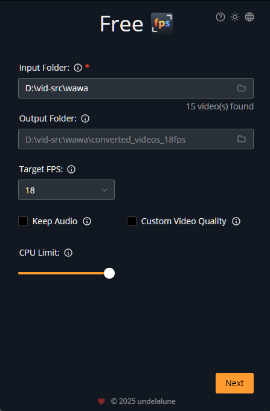
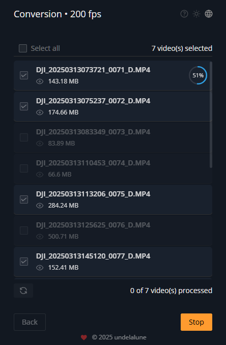
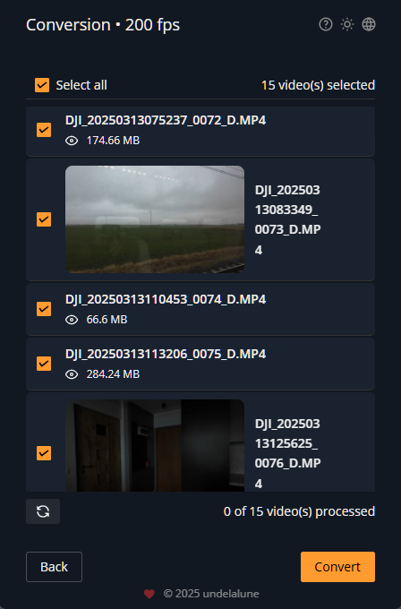
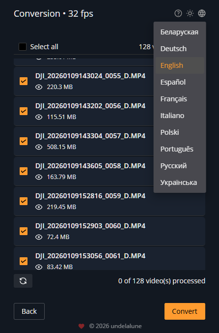

Screenshots





Free open-source tool to change video frame rates without interpolation
Convert video frame rates (FPS) precisely using FFmpeg. Perfect for changing 30fps to 60fps, 24fps to 30fps, or any custom frame rate. Adjust playback speed, re-encode audio, and control video quality. No AI interpolation, no frame blending, no effects - just pure speed adjustment by changing how fast your video plays. Also works as a powerful video compressor to reduce file sizes without changing FPS. Your original files are never modified.
Windows 10/11 macOS 10.15+
FPS (frames per second) conversion is the process of changing how fast a video plays back. Unlike AI-powered frame interpolation tools that generate new frames, Free-FPS simply adjusts the playback speed of your existing frames. This means:
Free-FPS isn't just for changing frame rates - it's also an excellent video compressor! You can keep your original FPS and use the quality controls to significantly reduce file size:
Note: File size reduction comes from compression settings (CRF/bitrate), not from changing FPS. The app gives you full control over quality vs. size trade-offs.
Convert video frame rates with mathematical precision. Supports all common formats including MP4, MKV, AVI, MOV, WebM, and more. Set any target FPS from 1 to 240+ fps.
Convert multiple videos simultaneously. Queue dozens of files and process them in parallel. Perfect for converting entire folders of footage at once.
Choose to preserve original audio speed or adjust it to match the new frame rate. Keep audio quality intact or re-encode for smaller file sizes.
Customize output quality with CRF (Constant Rate Factor) or automatic bitrate calculation. Also works as a video compressor to reduce file sizes without changing FPS.
Control how much CPU power the converter uses. Run conversions in the background while working on other tasks, or use maximum power for fastest results.
Available in 10 languages: English, Deutsch, Español, Français, Italiano, Polski, Português, Русский, Українська, Беларуская. Easy to use worldwide.
Download the free FPS converter for Windows or macOS. No registration required, no trial limitations. Start converting video frame rates instantly with our FFmpeg-powered desktop application.
Windows 10 1809+ and Windows 11
Requires Microsoft Edge WebView2 runtime
First run: Windows may warn about the app. See instructions
macOS 10.15+ (Catalina or newer)
Intel and Apple Silicon supported
First run: macOS may block unsigned apps. See instructions
Detailed instructions for using the Free-FPS desktop application in your language:
Prefer the command line? Use our PowerShell and Bash scripts directly:
FPS conversion (what Free-FPS does) changes the playback speed by adjusting timing between existing frames. Frame interpolation uses AI to generate new frames between existing ones. Free-FPS doesn't create artificial frames - it simply makes your video play faster or slower, which is useful for time-lapse effects, correcting recording speeds, or matching frame rates for editing.
No, pure FPS conversion always affects playback speed. Converting 30fps to 60fps will make your video play at 2x speed. If you want to keep the same playback speed, you would need frame interpolation software (which generates artificial frames). Free-FPS is designed for speed-based conversion, perfect for slow-motion footage, time-lapse, or matching framerates for editing.
Free-FPS supports all major video formats that FFmpeg can handle, including MP4, MKV, AVI, MOV, WebM, FLV, WMV, and many more. Input and output formats can be different - for example, you can convert an AVI file to MP4 while changing the frame rate.
Yes! Free-FPS can handle any resolution from SD to 8K and beyond. The processing speed depends on your computer's CPU power, but resolution doesn't affect the quality of FPS conversion. You can also adjust CPU usage to balance performance with system responsiveness.
Yes, Free-FPS is completely free and open-source (GPL-3.0 license). There are no file size limits, no watermarks, no trial periods, and no premium features. You can convert as many videos as you want. The project relies on community support and donations to continue development.
No! FFmpeg comes bundled with the application on both Windows and macOS. You don't need to install anything separately - just download Free-FPS and it's ready to use immediately. The app includes all necessary FFmpeg binaries, so you can start converting videos right away.
Free-FPS is open-source and completely free. If you find it useful, consider supporting the development: